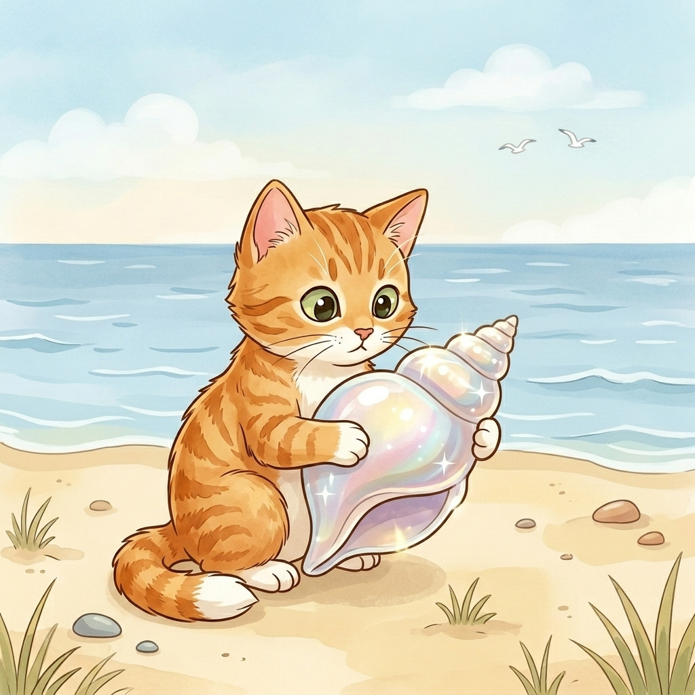

Step 1 · Say the Sound Team
sh
s and h say /sh/, like shell.
🐚shell
✨shiny
🤫sh
Read sh words. Then read one tiny story.

s and h say /sh/, like shell.
Shell sat on the sand.
Beach Cat saw the shell.
The shell was shiny.
Beach Cat had a shell.
You read sh words like shell and shiny.
That’s a new sound team.
If it still feels fun, read the story one more time.